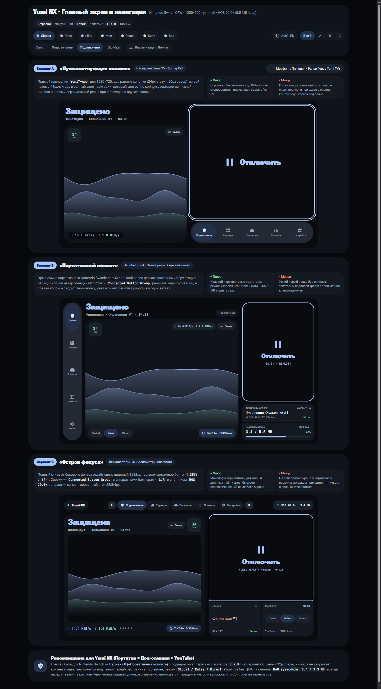

01 · Подключение и навигация
3 варианта- A · «Путешествующая пилюля» — прямой наследник Yumi TV с морфингом в рельс
- B · «Портативный кокпит» — постоянный левый рельс под Joy-Con + RAM sysmodule
- C · «Остров фокуса» — верхние L/R табы + широкое асимметричное бенто